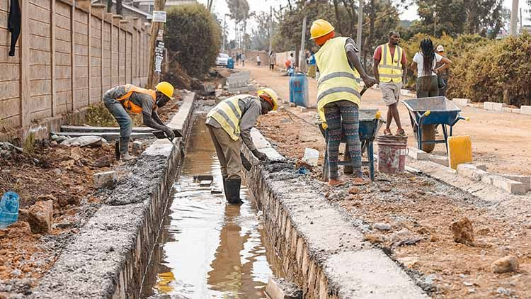

Civil infrastructure
Drainage & Earthworks
Site preparation and water-management works that protect infrastructure and keep projects moving.
What we deliver
Preparing sites for resilient infrastructure.
We carry out earthworks, excavation, drainage systems, culverts, and related site preparation for roads, developments, and public infrastructure.
Our teams manage levels, ground conditions, water flow, and compaction requirements so the finished works perform reliably in demanding environments.
What happens
- Survey, levels, and site assessment
- Clearing, excavation, and formation
- Drainage channels and culvert installation
- Backfilling, grading, and compaction
- Inspection and site handover
Work in context
Water control starts below the road.
Drainage is coordinated with formation levels, road edges, culverts, and outfalls so stormwater is directed safely away from the carriageway and surrounding properties.


Key outcomes
Better water flow and stronger ground conditions.
- Controlled surface water
- Stable site formation
- Correct falls and levels
- Durable culvert works
- Reduced erosion risk
- Safe, orderly sites
Start a conversation
Need drainage or earthworks support?
Share your site requirements and we will help define the right civil works package.
Request a Quote